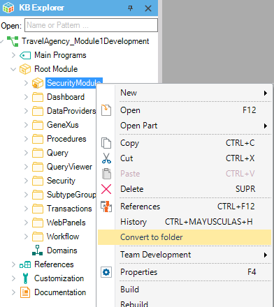

In some situations you may need to convert a Module object into a Folder object . This can be done using the Convert to folder option from the Module Object contextual menu. Note: Modules which contains Win objects can no be converted.  To use this option just right click the Module and press the Convert to folder option. Then a new Folder object will be created, with the same name as the previously selected Module, containing all the Module' objects.
|